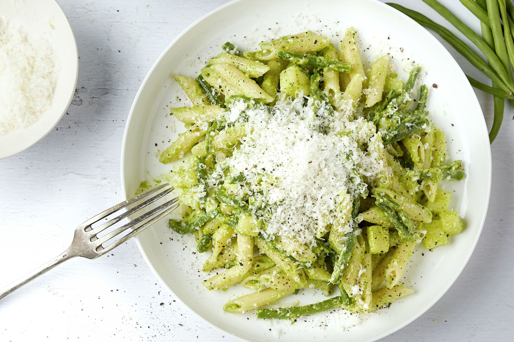

Boerenworst met tomaten

Ingredienten
- 1 ajuin
- 4 aardappelen
- 4 tomaten
- 4 worsten
- zout en peper
Bereiding
- Snijd alle groeten en aandappelen en doe die in een kom.
- Snijd de worst en bak die even in de pan.
- Steek de groeten en de aardappelen in de oven en bak die op 180°.
- Voeg op het einde de worst erbij.